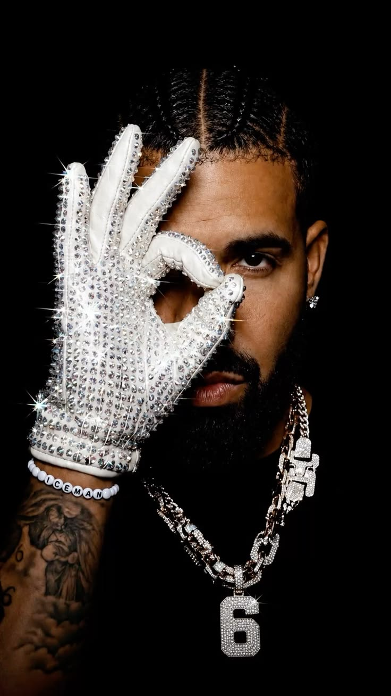

Aubrey Drake Graham (born October 24, 1986) is a Canadian rapper, singer, and actor. An influential figure in contemporary popular music, he has been credited for popularizing singing and R&B sensibilities in hip hop music.

He first gained recognition by starring as Jimmy Brooks in the CTV teen drama series Degrassi: The Next Generation before pursuing a career in music, releasing his debut mixtape Room for Improvement in 2006.